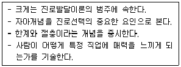
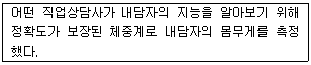
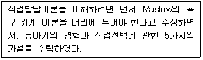
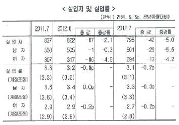
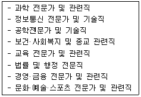
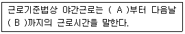
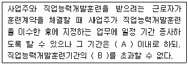

직업상담사-2급 (2012-08-26 기출문제)
1과목: 직업상담학
1. Bordin의 정신역동적 직업상담에서 사용하는 기법이 아닌 것은?
- 명료화
- 비교
- 소망-방어체계
- 반응 범주화
(정답률: 83%)

2. 직업상담과정에 관한 설명으로 틀린 것은?(오류 신고가 접수된 문제입니다. 반드시 정답과 해설을 확인하시기 바랍니다.)
- 일반적으로 직업상담은 관계의 형성 – 문제의 진단 – 목표의 설정- 구조화-중재-평가의 과정을 거친다.
- 관계의 형성 단계에서 가장 중요한 것은 상화 존중에 기초한 개방적이고 신뢰로운 관계를 형성하는 것이다.
- 직업상담의 목표를 설정한다고 해서 그 내담자가 반드시 문제를 가지고 있다는 것을 의미하는 것은 아니다.
- 평가는 직업상담의 필수적인 요소로서, 내담자를 위해서뿐만 아니라 직업상담사 스스로를 위해서도 상담과정에서 평가가 항상 뒤따라야 한다.
(정답률: 60%)
3. 비지시적 상담을 원칙으로 자아와 일에 대한 정보 부족 혹은 왜곡에 초점을 맞춘 직업상담은?
- 특성-요인 직업상담
- 행동주의 직업상담
- 내담자 중심 직업상담
- 정신분석적직업상담
(정답률: 82%)
4. 내담자의 인지적 명확성을 사정할 때 고려할 사항과 가장 거리가 먼 것은?
- 직장을 처음 구하는 사람도 직장생활을 하던 중 직업전환을 하는 사람과 직업상담에 관한 접근은 동일하다.
- 내담자의 직장인으로서의 역할이 다른 생애 역할과 복잡하게 얽혀 있는 경우 생애 역할을 함께 고려한다.
- 직업상담에서는 내담자의 동기를 고려하여 상담이 이루어져야 한다.
- 내담자가 우울증과 같은 심리적 문제로 인지적 명확성이 부족한 경우 진로문제에 대한 결정은 당분간 보류하는 것이 좋다.
(정답률: 85%)
5. Butcher가 제시한 집단직업상담을 위한 3단계 모델에 해당하지 않는 것은?
- 탐색단계
- 전환단계
- 실행단계
- 행동단계
(정답률: 86%)
6. 상담이론과 심리적 증상의 의미가 틀리게 짝지어진 것은?
- 정신분석적 접근 – 무의식적 충동에 대처하기 위한 증상 형성
- 내담자 중심 접근 – 자기와 경험의 불일치
- 행동주의적 접근 – 충동적인 욕구에 의한 부적응적인 행동
- 인지적 접근 – 비합리적이고 부적응즉인 사고방식
(정답률: 60%)
7. 전화상담의 장점과 가장 거리가 먼 것은?
- 상담관계가 안정적이다.
- 응급상황에 있는 내담자에게 도움이 된다.
- 청소년의 성문제 같은 사적인 문제를 상담하는데 좋다.
- 익명서이 보장되어 신분노출을 꺼리는 내담자에게 적합하다.
(정답률: 89%)
8. 직업상담 초기에 상담사가 내담자에게 보이지 말아야 할 비언어적 행동은?
- 미소
- 눈 맞춤
- 단호한 결단력
- 끄덕임
(정답률: 89%)
9. 상담과정 중 초기면담의 종결에서 수행되어야 할 내용으로 틀린 것은?
- 상담과정에서 필요한 과제물을 부여한다.
- 내면적 가정이 외면적 가정을 논박하지 못하도록 수행한다.
- 조급하게 내담자에 대한 결론을 내리지 않는다.
- 상담사의 개입을 시도한다.
(정답률: 74%)
10. 형태주의 상담에 관한 설명으로 틀린 것은?
- 인간은 과거와 환경에 의해 결정되는 존재로 보았다.
- 개인의 발달초기에서의 문제들을 중요시한다는 점에서 정신분석적 상담과 유사하다.
- 현재 상황에 대한 자각에 초점을 두고 있다.
- 개인이 자신의 내부와 주변에서 일어나는 일들을 충분히 자각할 수 있다면 자신이 당면하는 사람의 문제들을 개인 스스로가 효과적으로 다룰 수 있다고 가정한다.
(정답률: 68%)
11. Beck의 인지치료 이론에 관한 설명으로 옳은 것은?
- ABCD 모형에 기초하여 문제를 해결해 나간다.
- 인간의 사고와 행동은 서로 밀접한 연관이 있다.
- 인지적 오류에는 억압, 합리화, 퇴행, 투사 등이 있다.
- 인간의 행동은 환경적 조건에 따라 결정된다.
(정답률: 60%)
12. 직업상담시 내담자의 표현을 분류하고 재구성하기 위해 사용하는 역설적 의도의 원칙에 해당하지 않는 것은?
- 재구성 계획하기
- 저항하기
- 시간 제한하기
- 변화 꾀하기
(정답률: 58%)
13. 직업세계 이해 프로그램에 포함되지 않는 활동은?
- 개인의 일 경험
- 직업세계의 탐색
- 자격 및 면허 조건
- 합리적인 직업선택법
(정답률: 44%)
14. 체계적 둔감화를 주로 사용하는 상담기법은?
- 정신역동적 직업상담
- 특성-요인 직업상담
- 발달적 직업상담
- 행동주의 직업상담
(정답률: 74%)
15. 상담사의 기본 기술 중 내담자가 전달하려는 내용에서 한 걸음 더 나아가 그 내면적 감정에 대해 반영하는 것은?
- 해석
- 공감
- 명료화
- 적극적 경청
(정답률: 83%)
16. 특성-요인 상담의 목표가 아닌 것은?
- 내담자가 감성적으로 생활하도록 한다.
- 내담자가 자기통제를 가능하도록 한다.
- 내담자 자신이 필요로 하는 정보를 수집 · 분석 · 종합할 수 있도록 한다.
- 내담자 자신의 문제를 해결하도록 한다.
(정답률: 76%)
17. 검사 해석시 주의사항에 해당하지 않는 것은?
- 해석에 대한 내담자의 반응을 고려해야 한다.
- 검사결과에 대해 여러 정보에 근거한 주관적인 견해를 설명해 준다.
- 검사결과에 대해 내담자가 이해하기 쉬운 언어를 사용한다.
- 검사결과에 대한 내담자의 방어를 최소화하도록 한다.
(정답률: 85%)
18. 직업상담사가 지켜야 할 윤리사항으로 옳은 것은?
- 습득된 직업정보를 가지고 다니면서 직업을 찾아준다.
- 습득된 직업정보를 먼저 가까운 사람들에 알려준다.
- 상담에 대한 이론적 지식보다는 경험적 훈련과 직관을 앞세워 구직활동을 도와준다.
- 취업알선관련 전산망의 구인 · 구직 결과를 즉시 처리한다.
(정답률: 75%)
19. 생애진로사정의 구조에서 중요 주제에 해당하지 않는 것은?
- 요약
- 평가
- 강점과 장애
- 전형적인 하루
(정답률: 85%)
20. 진로발달단계는 자기정체감을 지속적으로 구별해 내고 발달과제를 처리하는 과정으로 설명하며 시간의 틀 내에서 개념화한 학자는?
- Super
- Holland
- Tiedman
- Gottfredson
(정답률: 65%)
2과목: 직업심리학
21. 경력개발 단계를 성장, 탐색, 확립, 유지, 쇠퇴의 5단계로 구분한 학자는?
- Bordin
- Colby
- Super
- Parsons
(정답률: 84%)
22. 다음은 어떤 이론에 관한 설명인가?

- 사회학습이론
- 직업포부 발달이론
- 가치중심적 진로이론
- 사회인지적 진로이론
(정답률: 62%)
23. 스트레스와 직무수행의 관계에 대한 설명으로 옳은 것은?
- 스트레스가 높아질수록 수행실적도 함께 증가한다.
- 스트레스 수준이 낮을수록 수행실적이 증가한다.
- 스트레스는 수행실적에 역U자 형태로 영향을 준다.
- 지각이나 결근은 스트레스와는 상관이 없다.
(정답률: 80%)
24. 강화계획 중 자동차 영업사원이 판매 대수에 따라 일정한 성과급을 받는 것은?
- 고정간격
- 고정비율
- 변동간격
- 변동비율
(정답률: 65%)
25. 조직감축에서 살아남은 구성원들이 조직에 대해 보이는 전형적인 반응은?
- 살아남은 구성원들은 조직에 대해 높은 신뢰감을 가지고 있다.
- 더 많은 일을 해야 하기 때문에 과로하며 종종 불이익도 감수하려고 한다.
- 살아남은 구성원들은 다른 직무나 낮은 수준의 직무로 이동하는 것을 거부한다.
- 조직감축에서 살아남은 데 만족하여 조직 몰입을 더욱 많이 한다.
(정답률: 83%)
26. 직업발달이론에 관한 설명으로 틀린 것은?
- 사회학습이론에서는 진로발달과정이 유전요인과 특별한 능력, 환경조건과 사건, 학습경험, 과제접근기술 등의 4가지 요인과 관련된다고 본다.
- 진로선택에 대한 정신분석적 접근에서는 초기의 발달 과정을 중시하며, 기본적인 욕구는 6세까지 형성된다고 가정하였다.
- 인지적 정보처리이론은 환경적 요인, 개인적 요인 그리고 실제 행동 간의 상호작용을 연구한다.
- 가치 중심적 진로접근모형은 가치, 흥미, 환경등과의 관계에서 가치 중심 모형의 명제를 제시하였다.
(정답률: 37%)
27. 다음 사례에서 측정의 신뢰도와 타당도에 관한 설명으로 옳은 것은?

- 신뢰도와 타당도가 모두 낮은 측정이다.
- 신뢰도와 타당도가 모두 높은 측정이다.
- 타당도는 낮지만 신뢰도는 높은 측정이다.
- 신뢰도와 낮지만 타당도는 높은 측정이다.
(정답률: 66%)
28. 진로발달에 맥락주의(Contextualism)에 관한 설명으로 틀린 것은?
- 행위는 맥락주의의 주요 관심대상이다.
- 맥락주의에서는 개인보다는 환경의 영향을 강조한다.
- 행위는 인지적 사회적으로 결정되며 일상의 경험을 반영하는 것이다.
- 진로연구가 진로상담에 대한 맥락상의 행위설명을 확립하기 위하여 고안된 방법이다.
(정답률: 73%)
29. 개인의 진로결정에 장애가 되는 요인을 파악하고 교육 및 진로 미결정의 선행요인을 알아내기 위한 목적으로 쓰이는 도구는?
- 진로성숙척도
- 진로결정척도
- 진로개발검사
- 진로계획척도
(정답률: 54%)
30. 자신의 직무나 직무경험에 대한 평가로부터 비롯되는 유쾌하거나 정적인 감정 상태는?
- 직무만족
- 직업적응
- 작업동기
- 직업욕구
(정답률: 85%)
31. 직업상담사가 직업을 전환하고자 하는 내담자에게서 우선적으로 탐색해야 할 것은?
- 변화에 대한 인지능력
- 새로운 직업에서 성공기대 수준
- 직업상담에 대한 기대
- 기존에 가지고 있던 직업에 대한 애착 수준
(정답률: 79%)
32. Tolbert가 제시한 개인의 진로발달에 영향을 주는 요인이 아닌 것은?
- 교육정도(Educational Degree)
- 직업흥미(Occupational Interest)
- 직업전망(Occupational Prospective)
- 가정 · 성별 · 인종(Family · Sex · Race)
(정답률: 73%)
33. 검사 점수의 표준오차에 관한 설명으로 옳은 것은?
- 검사의 표준오차를 클수록 좋다.
- 검사는 표준오차는 검사 점수의 타당도를 나타내는 수치다.
- 표준오차를 고려할 때 오차 범위 안의 점수 차이는 무시해도 된다.
- 표준오차가 크더라도 검사 점수에서 작은 차이도 받아들여야 한다.
(정답률: 76%)
34. 스트레스에 관한 설명으로 틀린 것은?
- 스트레스 여부는 상황에 대한 개인의 주관적 해석에 의존한다.
- 스트레스 여부는 상황에 대한 통제 가능성에 의존한다.
- B유형에 비해 A유형의 사람들이 스트레스원에 더 취약하다.
- 내적 통제자에 비해 외적 통제자가 스트레스 상황에 대한 대처능력이 뛰어나다.
(정답률: 75%)
35. 직무수행에 요구되는 지식, 기술, 능력 등의 인간적 요건들을 밝히는 데 목적을 두고 있는 직무분석방법은?
- 기능적 직무분석(FJA)
- 과제분석(Task Analysis)
- 직위분석질문지(PAQ)
- 과제목록기법(Task Inventory Technique)
(정답률: 64%)
36. Lofquist와 Dawis의 직업적응이론에서 직업적응유형의 개념에 관한 설명으로 틀린 것은?
- 일관성(Consistency) - 수행해야 할 다양한 작업들 간의 부조화를 참아내는 정도
- 끈기(Perseverance) - 환경이 자신에게 맞지 않아도 개인이 얼마나 오랫동안 견뎌낼 수 있는지의 정도
- 적극성(Activeness) - 개인이 작업환경을 개인적 방식과 좀 더 조화롭게 만들어가려고 노력하는 정도
- 반응성(Reactiveness) - 개인이 작업성격의 변화로 인해 작업환경에 반응하는 정도
(정답률: 80%)
37. 다음은 어떤 학자가 제시한 진로지도 및 선택이론에 해당되는가?

- Roe
- Gottfredson
- Holland
- Tuckman
(정답률: 81%)
38. 작업동기를 노력, 성과 그리고 도구성과의 관계로 설명하는 이론은?
- 형평이론
- 강화이론
- 욕구이론
- 기대이론
(정답률: 55%)
39. 직무분석 기법에 관한 설명으로 틀린 것은?
- 관찰법은 직무에 대한 가장 기초적인 정보를 제공하는 기법으로, 작업자를 현장에서 직접 관찰하여 직무활동과 내용으로 파악한다.
- 면접법은 직무수행 화동이나 직무수행에 필요한 기술을 파악하기 위해 작업자에게 직접 질문하는 기법이다.
- 결정적 사건법은 작업자들이 직무에서 결정적으로 잘한 사건이나 실수한 사건들을 수집하여 직무를 분석하는 기법이다.
- 사례법은 작업자들이 정해진 양식에 따라 작성한 작업일지로부터 직무에 관한 정보를 수집하는 기법이다.
(정답률: 66%)
40. 검사가 이론적 개념의 구성인자들을 제대로 측정하고 있는 정도를 나타내는 타당도는?
- 공인타당도
- 안면타당도
- 구인타당도
- 예측타당도
(정답률: 58%)
3과목: 직업정보론
41. 다음 표의 2012년 7월 고용동향에 관한 분석으로 틀린 것은?(오류 신고가 접수된 문제입니다. 반드시 정답과 해설을 확인하시기 바랍니다.)

- 실업자는 79만 5천명으로 전년동월대비 4만 2천명(-5.0%) 감소하였음
- 실업자는 성별로 보면 전년동월대비 남자는 50만 1천명으로 2만 9천명(-5.5%) 감소하였고, 여자는 29만 4천명으로 1만 3천명(-4.2%) 감소하였음
- 실업률은 성별로 보면 남자는 3.3%로 전년동월대비 0.3%p 하락하였고, 여자는 2.7%로 전년동월대비 0.2%p 하락하였음
- 계절조정 실업률은 3.1%로 전월대비 0.1%p 하락하였음
(정답률: 49%)
42. 한국표준직업분류에서 특정 직종의 분류요령으로 틀린 것은?
- 행정 관리 및 입법적 기능 수행업무 종사자 – 현업을 겸하는 경우에는 다른 사람의 직무후행을 감독 및 관리하는 직무에 평균 근무시간의 60% 이상 종사하는 자만 관리자로 분류한다.
- 감독 직종 – 반장 등과 같이 주로 수행된 일의 전문, 기술적인 통제업무를 수행하는 감독자는 그 감독되는 근로자와 동일 직종으로 분류한다.
- 공무원 직종 – 관공서의 기관장은 직급과 상관없이 관리자 직군으로 구분한다.
- 연구 및 개발업무 종사자는 ‘대분류 2 전문가 및 관련 종사자’에서 그 전문 분야에 따라 분류한다.
(정답률: 51%)
43. 한국직업사전의 직무기능 중 사물(T)에 해당하는 것은?
- 조작운전
- 분석
- 계산
- 자문
(정답률: 72%)
44. 잡맵(Job Map)의 직업검색결과 알 수 있는 정보가 아닌 것은?
- 종사자 수(해당직업/전체)
- 평균임금(최빈값)
- 평균학력 및 학력분포
- 평균연령 및 연령분포
(정답률: 59%)
45. 한국직업사전의 직무기능(DPT) 내용을 의미하는 [조정-자문-정밀작업]에 해당하는 수준들의 합은?
- 2
- 3
- 4
- 5
(정답률: 52%)
46. 워크넷(직업 · 진로)에서 제공하는 학과정보 검색방법이 아닌 것은?
- 키워드로 학과찾기
- 조건별 검색
- 계열별 검색
- 개설대학별 학과찾기
(정답률: 62%)
47. 국가기술자격 종목 중 임산가공기사, 임업종묘기사, 산림기사가 공통으로 해당하는 직무분야는?
- 건설
- 농림어업
- 안전관리
- 환경 · 에너지
(정답률: 73%)
48. 한국표준산업분류의 분류기준이 아닌 것은?
- 산출물의 특성
- 투입물의 특성
- 생산활동의 일반적인 결합형태
- 생산단위의 활동형태
(정답률: 64%)
49. 고용센터의 업무가 아닌 것은?
- 고용보험료 감액조정신청
- 고용보험 피보험자격 취득신고
- 외국인근로자 취업기간 만료자 취업화동기간 연장신청
- 육아휴직급여 신청
(정답률: 41%)
50. 민간직업정보의 일반적인 특성에 관한 설명으로 옳은 것은?
- 특정시기에 국한되지 않고 지속적으로 제공된다.
- 특정한 목적에 맞게 해당분야 및 직종을 제한적으로 제시하는 경향이 있다.
- 무료로 제공한다.
- 다른 정보에 미치는 영향이 크며 연관성이 높은편이다.
(정답률: 75%)
51. 직업정보의 처리과정에 대한 설명으로 틀린 것은?
- 직업정보 수집시에는 명확한 목표를 세운다.
- 직업정보 분석시에는 다각적인 분석을 시도하여 해석을 풍부히 한다.
- 직업정보 가공시에는 전문적인 용어를 주로 사용하여 활동가치를 높여야 한다.
- 직업정보 가공시에는 직업에 대한 장단점을 편견없이 제공해야 한다.
(정답률: 78%)
52. 워크넷(구직)에서 제공하는 취업지원프로그램 정보에 관한 설명으로 틀린 것은?
- 성실(중장년층) 프로그램 – 중장년(50세 이상)의 구직 자신감을 고취시키고, 일자리 정보의 탐색에서 이력서 작성, 면접기법 등 구직활동에 필요한 제반기술을 익힐 수 있도록 지원한다.
- 주부재취업설계 프로그램 – 취업을 원하나 출산, 육아로 인해 경력이 단절된 여성이 기초직업능력을 제고함으로써 재취업분야 결정 등 경력계획을 수립할 수 있도록 지원하고, 재취업 분야진입을 위한 방안을 실행할 수 있도록 지원한다.
- WIND(여성결혼이민자) 프로그램 – 여성결혼 이민자들에게 다양한 취업관련정보(한국상회에서 취업하는 데 필요한 정보습득, 장단기 경력 설계)를 제공함으로써, 한국사회에서 성공적으로 취업할 수 있도록 지원한다.
- 단기집단상담 프로그램 – 개인적인 사정으로 장기간의 프로그램 참여가 어려운 사람을 위해 본인에게 필요한 부분만을 선택하여 수강할 수 있는 3~5일의 집단상담 프로그램 단기과정이다.
(정답률: 59%)
53. 한국표준직업분류에서 다음 중분류가 해당되는 대분류는?

- 전문가
- 기술공 및 준전문가
- 전문가 및 관련종사자
- 기술공 및 준전문가 종사자
(정답률: 75%)
54. 직업정보서에 관한 설명으로 옳은 것은?(관련규정 개정전 문제로 기존 정답은 4번입니다. 여기서는 4번을 누르면 정답 처리 됩니다.)
- 한국직업사전에서는 임금정보를 제공한다.
- 한국직업전망의 고용전망은 ‘감소’, ‘현 상태유지’, ‘증가’ 등 3가지 수준으로 구분한다.
- 한국직업전망은 향후 10년간 일자리 전망정보를 제공한다.
- 한국직업사전에서 제공하는 산업분류는 통계청의 한국표준산업분류의 소분류를 기준으로 한다.
(정답률: 71%)
55. 워크넷(직업·진로) 직업탐방에서 ‘눈길끄는 이색직업’의 분류가 아닌 것은?(관련규정 개정전 문제로 기존 정답은 4번입니다. 여기서는 4번을 누르면 정답 처리 됩니다.)
- 식품/웰빙/여가
- 과학/정보통신
- 녹색직업
- 차세대융합기술
(정답률: 75%)
56. 한국표준산업분류에서 통계단위의 산업결정에 관한 설명으로 틀린 것은?
- 부차적 산업활동은 주된 산업활동 이외의 재화생산 및 서비스 제공 활동을 말한다.
- 주된 산업활동과 부차적 산업활동은 보조활동의 지원 없이도 수행될 수 있다.
- 생산단위의 산업활동은 그 생산단위가 수행하는 주된 산업활동의 종류에 따라 결정된다.
- 모 생산단위에서 사용되는 재화나 서비스를 보조적으로 생산하더라도 그 생산되는 재화나 서비스의 대부분을 다른 산업체에 판매하는 경우 별개의 활동으로 간주하여 그 자체활동에 따라 분류하여야 한다.
(정답률: 51%)
57. 다음 중 국가기술자격 종목에 해당하지 않는 것은?
- 임상심리사 2급
- 컨벤션기획사 2급
- 사회조사분석사 2급
- 자동차관리사 2급
(정답률: 70%)
58. Q-Net에서 제공하는 자격정보가 아닌 것은?
- 과정이수형자격 종목별 상세정보
- 국가기술자격 종목별 상세정보
- 민간자격 국가공인제도
- 외국의 국가별 자격제도
(정답률: 50%)
59. 국가기술자격 소비자전문상담사 1급의 응시자격이 아닌 것은?
- 해당 종목의 2급 자격 취득 후 소비자상담 실무경력 2년 이상인 사람
- 소비자상담 관련 실무경력 3년 이상인 사람
- 대학졸업자 등으로서 졸업 후 응시하고자 하는 종목이 속하는 동일직무분야에서 2년 이상 종사한 자
- 외국에서 동일한 종목에 해당하는 자격을 취득한 사람
(정답률: 55%)
60. 다음중 민간등록자격의 상세한 종목별 자격정보를 제공하는 정보망은?(관련규정 개정전 문제로 기존 정답은 2번입니다. 여기서는 2번을 누르면 정답 처리 됩니다.)
- hrd.go.kr
- pqi.or.kr
- ilmoa.go.kr
- careerjob.or.kr
(정답률: 77%)
4과목: 노동시장론
61. 효율임금이론에서 고임금이 고생산성을 가져오는 원인에 관한 설명으로 틀린 것은?
- 고임금은 노동자의 직장상실 기대비용을 증대시켜 노동자로 하여금 열심히 일하게 한다.
- 대규모 사업장에서는 통제상실을 사전에 방지하는 차원에서 고임금을 지불하여 노동자를 열심히 일하도록 유도할 수 있다.
- 고임금은 노동자의 사직을 감소시켜 신규노동자의 채용 및 훈련비용을 감소시킨다.
- 균형임금을 지불하여 경제 전반적으로 동일 노동 · 동일 임금이 달성되도록 한다.
(정답률: 72%)
62. 다음 중 정부가 노동시장에서 구인 · 구직정보의 흐름을 원활하게 하면 직접적으로 줄어드는 실업의 유형은?
- 마찰적 실업
- 경기적 실업
- 구조적 실업
- 계절적 실업
(정답률: 72%)
63. 기업별 노동조합의 장점이 아닌 것은?
- 조합 구성이 용이하다.
- 단체교섭 타결이 용이하다.
- 노동시장 분단을 완화시킬 수 있다.
- 조합원 간의 친밀감이 높고 강한 연대감을 가질 수 있다.
(정답률: 61%)
64. 프리만(Freeman)과 메도프(Medoff)가 지적한 노동조합의 두 얼굴에 해당하는 것은?
- 결사와 교섭
- 자율과 규제
- 독점과 집단적 목소리
- 자치와 대등
(정답률: 71%)
65. 다음 중 ‘전략적 파업’의 원인이 아닌 것은?
- 미래의 단체교섭력 증진을 위하여
- 조합원의 신뢰를 얻기 위하여
- 조합원의 보다 많은 휴식을 위하여
- 조합원의 응집력과 단결력을 훈련시키기 위하여
(정답률: 71%)
66. 장 · 단기 노동수요의 탄력성에 관한 설명으로 옳은 것은?
- 장기가 단기에 비해 더욱 탄력적이다.
- 장기가 단기에 비해 더욱 비탄력적이다.
- 장기와 단기의 탄력성은 같다.
- 노동공급곡선이 탄력성과 비교해야 알 수가 있다.
(정답률: 64%)
67. 다음중 성과급 제도의 장점은?
- 직원 간 화합이 용이하다.
- 근로의 능률을 자극할 수 있다.
- 임금의 계산이 간편하다.
- 확정적 임금이 보장된다.
(정답률: 78%)
68. 우리나라의 생산가능인구는 만 몇 세 이상인가?
- 14세
- 15세
- 16세
- 17세
(정답률: 81%)
69. 노동수요의 탄력성에 관한 설명으로 틀린 것은?
- 생산물의 수요가 탄력적일수록 노동수요는 더 탄력적이다.
- 총비용에서 차지하는 노동비용의 비율이 작을수록 노동수요는 더 탄력적이다.
- 노동과 다른 생산요소 간의 대체가 용이할수록 노동수요는 더 탄력적이 된다.
- 노동 이외 생산요소의 공급탄력성이 클수록 더 탄력적이 된다.
(정답률: 68%)
70. 임금률 상승의 대체효과가 소득효과보다 클 때 노동시간 공급은?
- 증가한다.
- 감소한다.
- 불변이다.
- 상관없다.
(정답률: 63%)
71. 한계수입생산물(Marginal Revenue Product)은?
- 한계수입 X 한계생산물
- 한계수입 X 생산물가격
- 총수입 X 한계생산물
- 한계수입 X 생산량
(정답률: 62%)
72. 노동시장에서 존재하는 임금격차에 대한 설명으로 틀린 것은?
- 노동생산성의 차이, 근로자의 공헌도 차이 등에 의해서 임금격차가 발생하며 직종간 노동이동이 자유롭지 못할수록 직종별 임금격차는 크게 발생할 것이다.
- 성별 직종별 임금격차는 점점 축소되는 경향을 보이고 있으며, 대학졸업자들이 양산됨에 따라 학력별 임금격차 역시 축소되는 경향을 보일 것이다.
- 저임금근로자의 노동공급이 노동수요를 초과하는 정도가 클수록 임금격차는 확대될 것이며, 반대일 경우에는 임금격차가 축소될 것이다.
- 대졸자 취업난 시대에도 많은 기업들이 대졸자에게 고임금을 지급하는 이유는 임금격차를 설명하는 효율임금이론과 관련된 것으로서 이윤극대화 목표와는 무관할 것이다.
(정답률: 61%)
73. 실업에 관한 설명으로 옳은 것은?
- 경기후퇴시에는 실망노동자효과는 실업률을 감소시키고 부가노동자효과는 실업률을 증가시킨다.
- 잠재실업자는 통계청의 경제활동인구조사에서 실업자의 일부로 집계된다.
- 완전고용이란 실업률이 영(0)인 상태를 말한다.
- 밀튼 프리드만(M.Freedman)에 의하면 자연실업률은 국가별로 예측될 수 있다.
(정답률: 62%)
74. 노사관계의 3주체(Tripartite)를 바르게 짝지은 것은?
- 노동자 – 사용자 – 정부
- 노동자 - 사용자 – 국회
- 노동자 – 사용자 – 정당
- 노동자 – 사용자 – 사회단체
(정답률: 80%)
75. 노동조합 조직률 변동의 결정요인에 관한 설명으로 틀린 것은?
- 근로조건 열악 등에서 오는 불만과 분노의 양이 클수록 노조의 집단발언효과로 인하여 노조가입의 예상 순이익이 증가할 수 있다.
- 노조의 정치활동으로 근로자의 간접임금이 높아질 가능성이 커지면 예상순이익이 증가하여 노조강비에 대한 수요가 증가할 것이다.
- 여성고용의 비중이 증가하면 노조가입률은 하락할 것이다.
- 산업구조가 서비스업 중심으로 바뀜에 따라 화이트칼라 구성이 높아지면 노조가입은 증가한다.
(정답률: 55%)
76. 노동시장에 관한 신고전학파의 주장이 아닌 것은?
- 경쟁적 노동시장
- 노동시장의 분단
- 동일노동 – 동일임금
- 노동의 자유로운 이동
(정답률: 51%)
77. 경제활동인구조사에서 비정규직근로자에 해당하지 않는 근로자는?
- 한시적 근로자
- 비전형 근로자
- 시간제 근로자
- 단순노무 근로자
(정답률: 67%)
78. 다음 중 임금체계에 관한 설명으로 틀린 것은?
- 직능급은 개인이 직무수행능력을 고려하여 임금을 관리하는 체계이다.
- 속인급은 연령, 근속, 학력에 따라 임금을 결정하는 체계이다.
- 직무급은 직무분석과 직무평가를 기초로 직무의 상대적 가치에 따라 임금을 결정하는 체계이다.
- 연공급은 근로자의 생산서에 바탕을 둔 임금체계이다.
(정답률: 71%)
79. 파업의 경제적 손실에 관한 설명으로 틀린 것은?
- 파업에 따른 사회적 비용은 제조업보다 서비스업에서 더 크다
- 파업에 참여한 근로자의 사적손실은 파업 잠여에 따른 임금소득의 상실분보다 작은 편이다.
- 파업기간 중의 생산중단에 따른 이윤 감소분이 바로 사용자의 사적손실에 해당한다.
- 파업기간이 길어지면 파업의 경제적 손실이 증가한다.
(정답률: 49%)
80. 다음 중 경기침체시 실업률이 높아질 때 경제활동인구를 감소시키는 효과는?
- 대체효과(Substitution Effect)
- 부가노동자효과(Added Worker Effect)
- 대기실업효과(Wait-unemployment Effect)
- 실망노동자효과(Discouraged Worker Effect)
(정답률: 75%)
5과목: 노동관계법규
81. 남녀고용평등과 일 · 가정 양립 지원에 관한 법률상 차별에 해당하지 않는 것은?
- 사업주가 근로자에게 성별, 혼인, 가족 안에서의 지위, 임신 또는 출산 등의 사유로 합리적인 이유 없이 채용 또는 근로의 조건을 다르게 하거나 그 밖의 불리한 조치를 하는 경우
- 사업주가 채용조건이나 근로조건은 동일하게 적용하더라도 그 조건을 충족할 수 있는 남성 또는 여성이 다른 한 성에 비하여 현저히 적고 그 조건이 정당한 것임을 증명할 수 없는 경우
- 사업주는 여성 근로자를 모집 · 채용할 때 그 직무에 필요하지 아니한 용모 · 키 · 체중 등의 신체적 조건, 미혼 조건, 그 밖에 고용노동부령으로 정하는 조건을 제시하거나 요구하는 경우
- 현존하는 남녀 간의 고용차별을 없애거나 고용평등을 촉진하기 위하여 잠정적으로 특정 성을 우대하는 조치를 취하는 경우
(정답률: 66%)
82. 근로자직업능력개발법상 직업능력개발훈련이 중요시되어야 할 대상에 해당하지 않는 것은?
- 「국민기초생활보장법」에 따른 수급권자
- 「제대군인지원에 관한 법률」에 따른 전역예정자
- 제조업의 연구직에 종사하는 근로자
- 일시적 사업에 고용된 근로자
(정답률: 74%)
83. 고용보험법상 실업급여의 종류에 해당하지 않는 것은?
- 구직급여
- 광역구직활동비
- 고용유지지원금
- 직업능력개발수당
(정답률: 67%)
84. 남녀고용평등과 일 · 가정 양립 지원에 관한 법률상 명예고용평등감독관(명예감독관)에 관한 설명으로 틀린 것은?
- 명예감독관의 임기는 3년으로 하되, 연임할 수 있다.
- 고용노동부장관은 명예감독관의 위촉 및 해촉(解囑) 권한을 지방고용노동관서의 장에게 위임한다.
- 남녀고용평등 제도에 대한 홍보 · 계몽 업무를 수행하는 경우에는 상근을 원칙으로 한다.
- 고용노동부장관은 명예감독관으로 활동하기에 부적합한 사유가 있어 해당 사업의 노사 대표가 공동으로 해촉을 요청한 경우에 그 명예감독관을 해촉할 수 있다.
(정답률: 66%)
85. 고용정책기본법상 일정한 임무를 부여받고 있는 주체가 아닌 것은?
- 사업주
- 직업안정기관
- 고용노동부장관
- 노동위원회
(정답률: 57%)
86. 직업안정법상 지방자치단체의 장이 필요에 따라 구인자 및 구직자에 대하여 할 수 있는 업무가 아닌 것은?
- 국내 직업소개
- 직업지도
- 직업정보제공
- 국외직업소개
(정답률: 56%)
87. 고용상 연령차별금지 및 고령자조용촉진에 관한 법률에 관한 설명으로 틀린 것은?
- 고령자는 인구, 취업자의 구성 등을 고려하여 대통령령이 정하는 연령 이상인 자를 말한다.
- 사업주라 함은 근로자를 사용하여 사업을 하는 자를 말한다.
- 근로자라 함은 근로기준법 제2조의 규정에 의한 근로자를 말한다.
- 대통령은 고령자의 직업지도와 취업알선 등에 필요한 전문인력과 시설을 갖춘 단체를 고령자 인재은행으로 지정할 수 있다.
(정답률: 41%)
88. 남녀고용평등과 일·가정 양립 지원에 관한 법령상 육아휴직에 관한 설명으로 옳은 것은?(관련규정 개정전 문제로 기존 정답은 1번입니다. 여기서는 1번을 누르면 정답 처리 됩니다.)
- 사업주는 근로자가 만 6세 이하 초등학교 취학 전 자녀(입학자녀 포함)의 양육을 위하여 육아휴직을 신청하는 경우 이를 허용해야 한다.
- 육아휴직기간은 6개월 이내로 하되, 당해 영아가 생후 1년이 되는 날을 경과할 수 없다.
- 육아휴직을 시작하려는 날의 전날 까지 해당 사업에서의 계속 근로기간이 1년 미만인 근로자에게도 육아휴직을 허용하여야 한다.
- 육아휴직기간은 근속기간에 포함되지 않는다.
(정답률: 74%)
89. 고용보험법상 구직급여 수급요건에 관한 설명으로 틀린 것은?
- 피보험단위기간을 충족할 것
- 2주마다 실업인정을 받을 것
- 이직사유가 수급자격 제한사유에 해당하지 아니할 것
- 근로의 의사와 능력을 가지고 구직활동을 할 것
(정답률: 65%)
90. 근로기준법령상 휴게시간이 반드시 부여되어야 하는 근로자는?
- 사회복지사업에 종사하는 근로자
- 고용노동부장관의 승인을 받아 단속근로에 종사하는 근로자
- 기밀업무를 취급하는 근로자
- 양잠사업에 종사하는 근로자
(정답률: 55%)
91. 다음 괄호에 알맞은 것은?

- A: 오후 8시, B : 오전 4시
- A: 오후 10시, B : 오전 6시
- A: 오후 12시, B : 오전 6시
- A: 오후 6시, B : 오전 4시
(정답률: 76%)
92. 근로자직업능력개발법령상 직업능력개발사업을 하는 사업주에게 지원되는 것으로 틀린 것은?
- 근로자를 대상으로 하는 자격검정사업 비용
- 직업능력개발훈련을 위한 시설의 설치 사업 비용
- 근로자의 경력개발관리를 위하여 실시하는 사업 비용
- 고용노동부장관의 인정을 받은 직업능력개발훈련 과정 수강 비용
(정답률: 55%)
93. 직업안정법상 직업소개의 원칙으로 틀린 것은?
- 구직자 능력에 알맞은 직업의 소개
- 구인자의 구인조건에 적합한 구직자 소개
- 구직자에게 임금수준이 높은 직업의 소개
- 구직자 통근 가능한 지역 내 직업 소개
(정답률: 75%)
94. 근로기준법상 허용되지 않는 것은?(문제 오류로 가답안 발표시 2번으로 발표되었지만 문제 오류로 복수 정답 처리 되었습니다. 여기서는 2번을 누르면 정답 처리 됩니다.)
- 사용자가 근로계약 불이행에 대한 손해배상을 예정하는 계약을 체결하는 것
- 사용자가 근로자로부터 근로계약 불이행에 대한 손해배상을 받는 것
- 사용자가 근로할 것을 조건으로 하는 전대(前貸) 채권과 임금을 상계하는 것
- 사용자가 근로계약에 덧붙여 저축금의 관리를 규정하는 계약을 체결하는 것
(정답률: 75%)
95. 헌법상 근로의 권리로서 명시되어 있지 않는 것은?
- 최저임금제 시행
- 여성근로자의 특별보호
- 연소근로자의 특별보호
- 장애인 근로자의 특별보호
(정답률: 61%)
96. 고용상 연령차별금지 및 고령자고용촉진에 관한 법률상 사업주의 책무가 아닌 것은?
- 고령자 고용촉진 대책의 수립 시행
- 연령을 이유로 하는 고용차별 해소
- 고령자에게 그 능력에 맞는 고용 기회 제공
- 정년연장 등의 방법으로 고령자의 고용 확대
(정답률: 64%)
97. 고용상 연령차별금지 및 고령자고용촉진에 관한 법령에 관한 설명으로 옳은 것은?
- 고령자라 함은 60세 이상인 자를 말하고, 준고령자라 함은 55세 이상 60세 미만인 자를 말한다.
- 고용노동부장관은 상시 고용하는 고령자의 비율이 기준고용율에 미달하는 사업주에 대하여 고령자의 고용명령을 명할 수 있으며 이에 따르지 아니하는 경우에는 벌칙이 부과한다.
- 사업주가 기준고용율을 초과하여 고령자를 추가로 고용하는 경우에는 조세특례제한법으로 정하는 바에 따라 조세를 감면한다.
- 사업주가 고령자인 정년퇴직자를 재고용함에 있어서는 퇴직금 및 연차유급휴가일수 계산을 위한 계속근로 기간의 산정에 있어서 종전의 근로기간과 재고용후의 근로기간을 통산하여야 한다.
(정답률: 67%)
98. 헌법상 노동기본권에 관한 설명으로 옳은 것은?
- 공무원인 근로자는 법률이 정하는 자에 한하여 노동3권을 가진다.
- 근로자는 근로자의 근로조건과 정치적 지위향상을 위하여 자주적인 노동3권을 가진다.
- 법률이 정하는 중요방위산업체에 종사하는 근로자의 단체교섭권은 법률이 정하는 바에 의하여 인정하지 않을 수 있다.
- 노동3권이라 함은 결사권, 단체교섭권, 단체행동권을 말한다.
(정답률: 61%)
99. 고용정책기본법의 고용정책을 수립 · 시행하는 경우에 실현되도록 하여야 할 기본원칙으로 틀린 것은?
- 사업주의 자율적인 고용관리를 수용
- 구인자의 자발적인 구인노력 촉진
- 근로자의 직업선택의 자유 확보
- 고용정책을 효율적이고 성과지향적으로 수립 · 시행
(정답률: 51%)
100. 근로자직업능력개발법상의 내용으로 괄호에 알맞은 것은?

- A : 1년, B : 1배
- A : 2년, B : 2배
- A : 3년, B : 3배
- A : 5년, B : 3배
(정답률: 73%)